Agent detection bias
The inclination to presume the purposeful intervention of a sentient or intelligent agent.
Hypothesis AssessmentAssociation

Cognitive Biases
A practical cognitive-bias site with clear definitions, learning paths, assessments, self-audits, and debiasing tools.
Category
Biases in this cluster distort how evidence is interpreted, how rival explanations are tested, and how claims are evaluated.
Use these side by side before deciding which label best fits the judgment failure you are seeing.
The inclination to presume the purposeful intervention of a sentient or intelligent agent.

A belief becoming more plausible through repeated public repetition, social uptake, and feedback.

The tendency to accept vague, flattering, or generic descriptions as uniquely accurate of oneself.

The tendency to judge an argument as stronger when its conclusion seems believable and weaker when its conclusion seems unbelievable, even if the reasoning structure is unchanged.

The tendency to draw misleading statistical conclusions from conditionally selected samples.

The tendency to overestimate the importance of small runs, streaks, or clusters in large samples of random data.

The perception of contradictory information and the mental toll of it.

The tendency to combine or compare research studies from the same source, or from sources that use the same methodologies or data.

The tendency to notice, seek, and remember evidence that supports the story you already prefer more readily than evidence that threatens it.
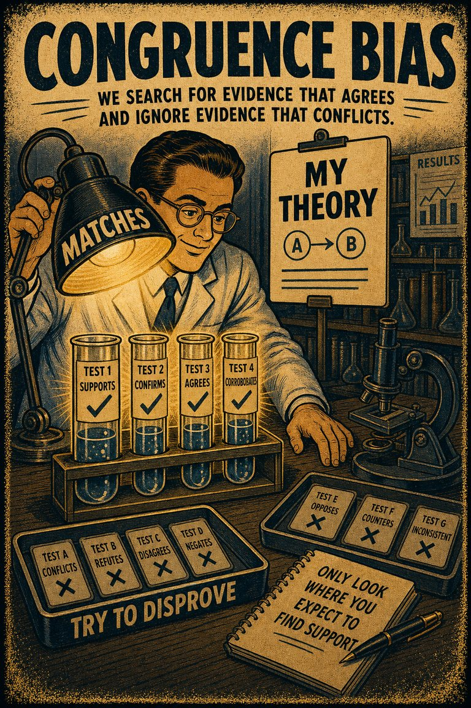
The tendency to test hypotheses exclusively through direct testing, instead of testing possible alternative hypotheses.
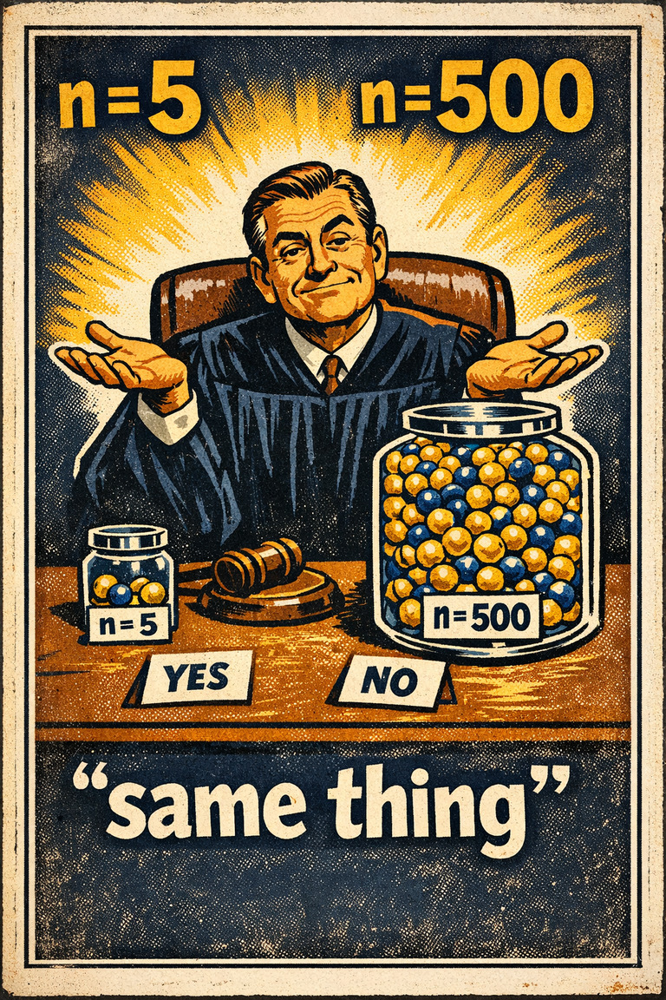
The tendency to judge outcomes without giving enough weight to sample size or quantity.

Initial beliefs and knowledge which interfere with the unbiased evaluation of factual evidence and lead to incorrect conclusions.

The tendency to treat ideas or options that feel easier to process as better or truer.
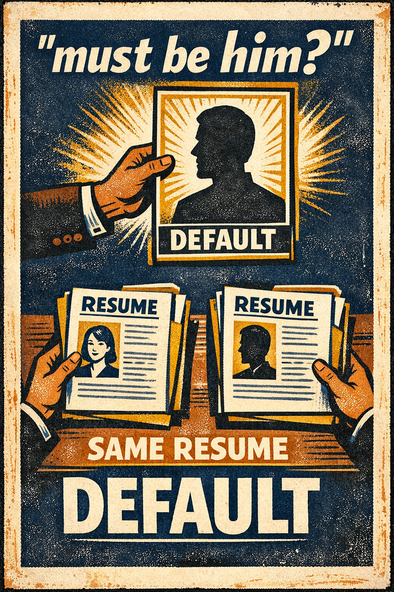
A widespread set of implicit biases that discriminate against a gender.

The tendency for decisions to be more risk-seeking or risk-averse than the group as a whole, if the group is already biased in that direction.

The tendency for groups to protect harmony or momentum at the cost of critical evaluation and dissent.

The tendency to believe you understand how something works more deeply than you actually do, especially until you are forced to explain the mechanism step by step.

Inaccurately seeing a relationship between two events related by coincidence.

The tendency to believe that a statement is true if it is easier to process, or if it has been stated multiple times, regardless of its actual veracity.

The underlying attitudes and stereotypes that people unconsciously attribute to another person or group of people that affect how they understand and engage with them.
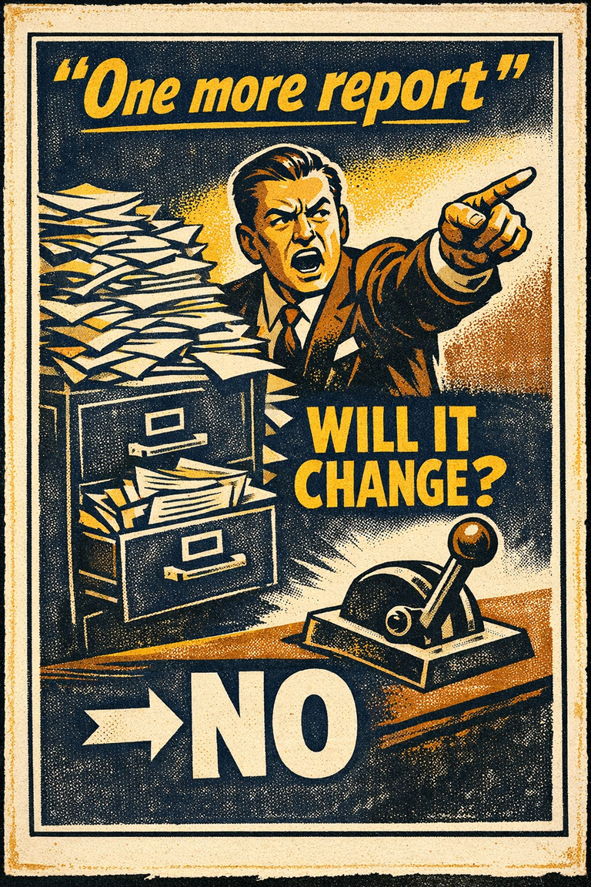
The tendency to seek information even when it cannot affect action.

The tendency to use reasoning as a defense lawyer for desired conclusions rather than as an impartial search for what is most likely true.
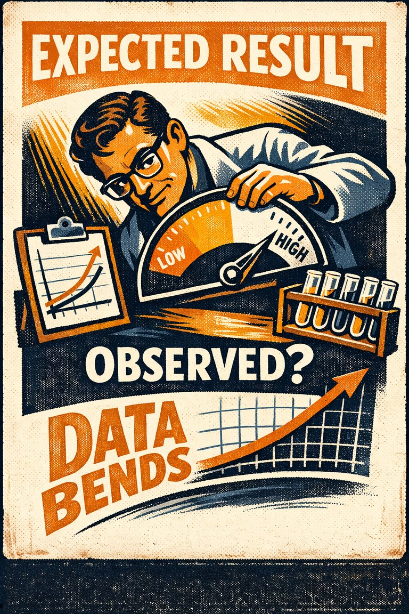
The tendency for a researcher's expectations to unconsciously shape procedures, observations, or interpretations.

The tendency to be more certain about judgments, forecasts, or abilities than the evidence warrants.
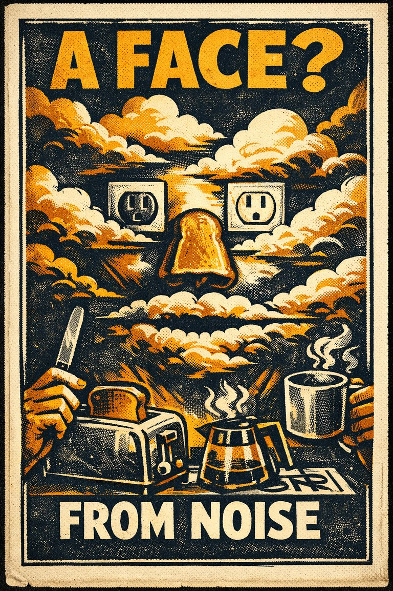
The tendency to perceive meaningful patterns, faces, or messages in vague or random stimuli.
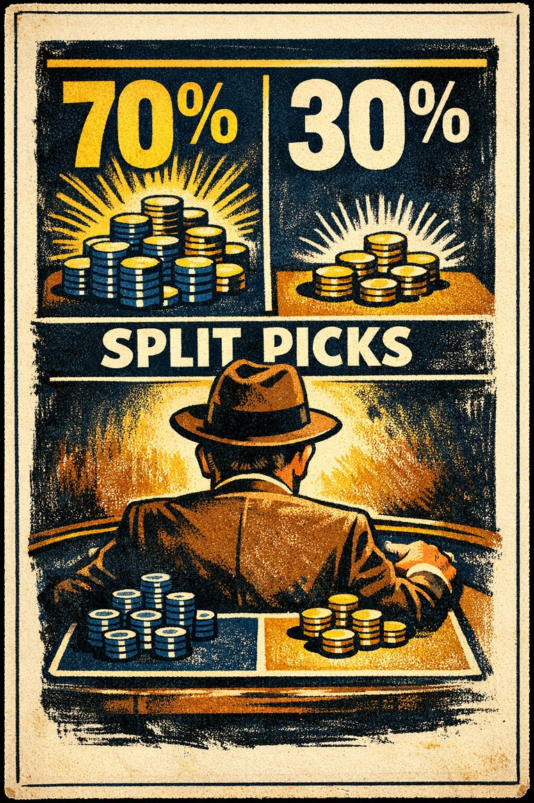
Sub-optimal matching of the probability of choices with the probability of reward in a stochastic context.
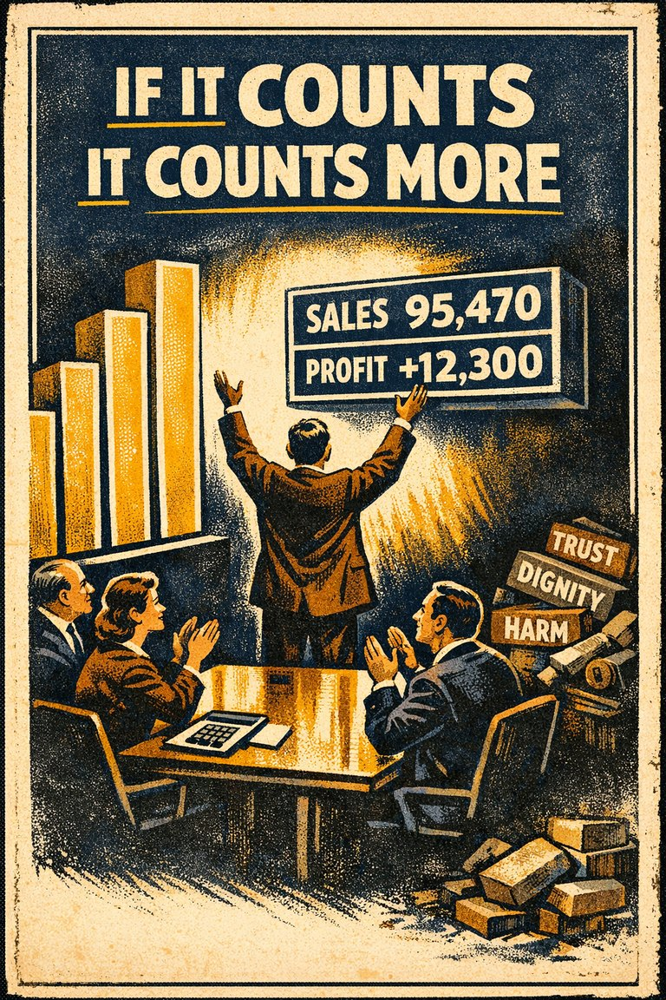
The tendency to ascribe more weight to measured/quantified metrics than to unquantifiable values.
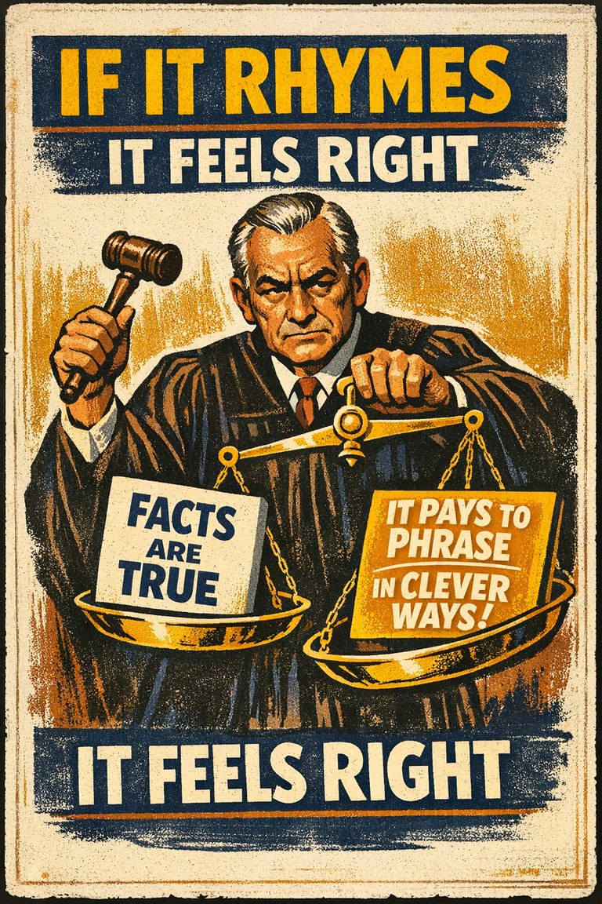
The tendency to treat rhyming statements as more truthful or convincing.
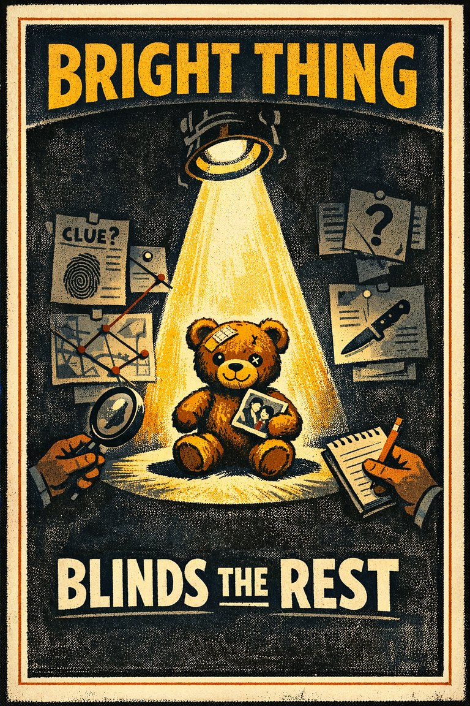
The tendency to focus on striking or emotional information and neglect less vivid but relevant information.

Communicating a socially tuned message to an audience can lead to a bias of identifying the tuned message as one's own thoughts.
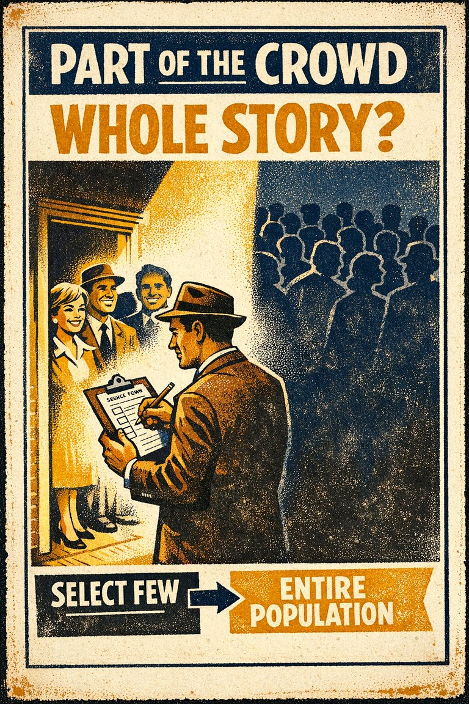
Which happens when the members of a statistical sample are not chosen completely at random, which leads to the sample not being representative of the population.

The tendency to estimate that the likelihood of a remembered event is less than the sum of its mutually exclusive components.
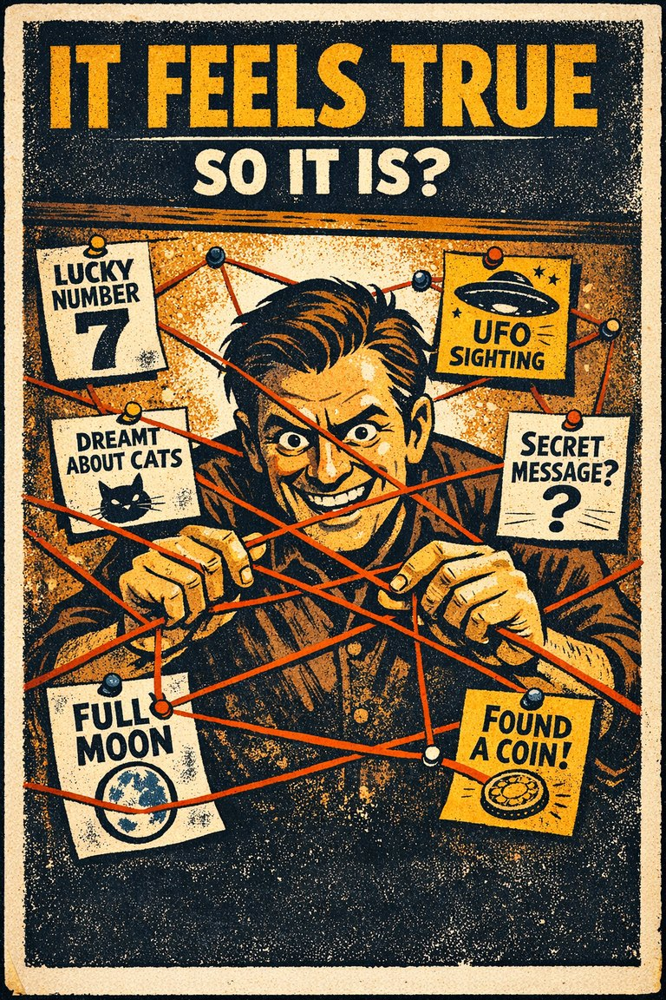
The tendency to treat a claim as true because it fits one's beliefs, hopes, or personal experience.

The tendency to learn from the visible winners while overlooking the invisible failures that dropped out of view.
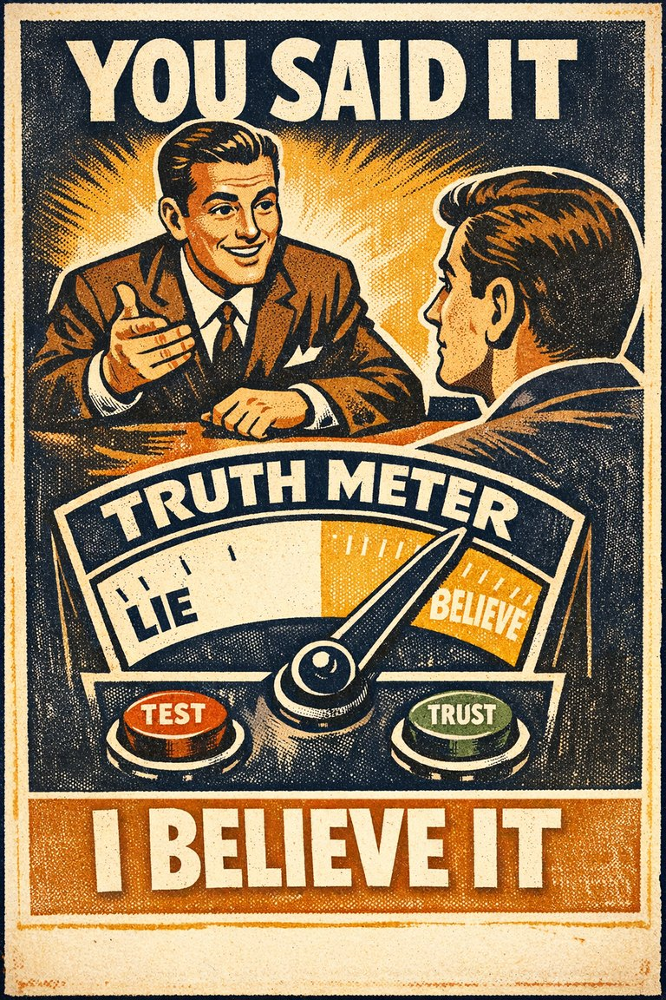
People's inclination towards believing, to some degree, the communication of another person, regardless of whether or not that person is actually lying or being untruthful.
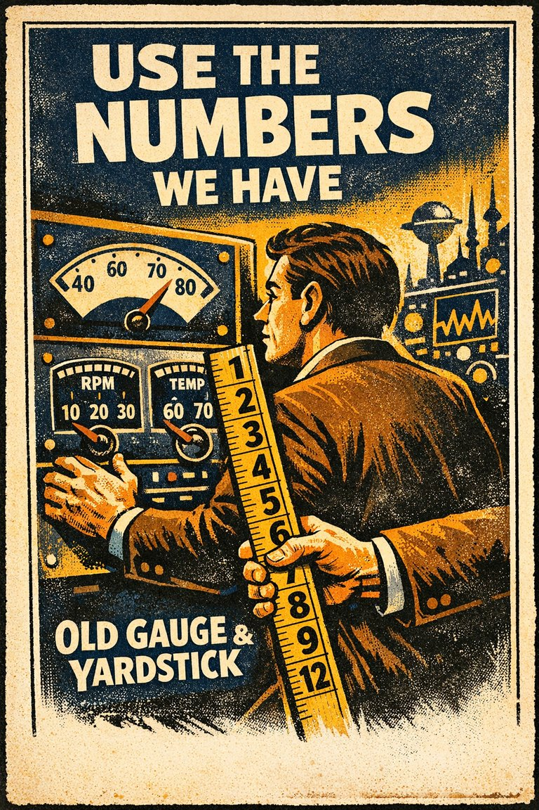
The tendency to rely on existing numerical data when reasoning in an unfamiliar context, even if calculation or numerical manipulation is required.